Diseño de videojuegos
Introduction
Game design classes
- An overview on the most relevant aspects of game design and level design
- We will try to review many things, although there is much more
Creating videogames
Creating experience
Games are all about experience
Games occur in the player's mind
In general terms, what we do as designers is create dynamic experiences
Games are free (as in freedom) virtual experiences
Players play freely, they enjoy it (intrinsic motivation)
However, games happen in time and spatial constraints
Designing videogames requires work
Finishing a complete game desing is not a simple task of big "creativity"
It requires knowledge, teamwork and a lot of experience
Particularities of a videogame
Videogames are complex and involve many forms or art and technology
Designing a videogame is a design task, there is no automated pipeline ensuring a good gameplay
A game designer should have these skills:
- Plays a lot
- Able to come up with non-video games
- Knowledge on art (music, sound)
- Some knowledge on technology/programming
- Write decent narratives
- Abstraction skills
- Communication and writing skills
- LOVES videogames
A game design has (among other, and as a simplification), two main perspectives:
- High level design: concept, concept expansion, formal draft
- Low level design: interface, mechanics, tools, narrative, game design document
Game specification
It is not uncommon to refine an idea iteratively when designing a videogame:
- The player can use keys
- The player can use keys of several types
- The player can use two types of keys. Red ones will open the master room, and green ones will open any other door
- The player can use two types of keys. Red ones will be found only once per dungeon, and at least \(n > 15\) rooms from the initial one. Each dungeon contains, exactly \(k\) green keys, which correspond to all locked doors in the dungeon
Game and player
Games are pleasant to the player. Why?
Surprise and discovery
Games produce surprise
Overcoming uncertainty and discovery is rewarding
Problem solving and challenge
Playing means challenge–without it, boredom happens!
Solving a conflict is pleasant
Playability
Playability is the set of properties that describe the player experience in a certain game
Playability determines the game genre
Game design document (GDD)
The magical recipe for structuring a game design idea does not exist
However, there are some good practices that are worth considering when writing down a design
The GDD contract
The GDD is a great way of communication between all members of a development team
In theory, all decisions should make it to the GDD, and whatever is written there should be assumed to be a decision
What the GDD contains can vary
The GDD depends on the team, and must be useful, not strict and cumbersome
There are three detail levels that, some times, are laid out in different documents:
- Overview: the general concept and ideas
- Details: all mechanics and details. It is great as the design knowledge base
- Story: The lore, settings and overall story leading to (or happening in) the game
GDD examples
Info in the GDD
Basic information
- Title (tentative)
- Brief synopsis (1 paragraph)
- Genre
- Age range
- PEGI info
- Target audience
Lore and context
Description of the game world (fantasy, sci-fi, no story at all…)
Core loop
The sequence of top-level abstractions that will keep the players engaged:
Prepare, challenge, reward
Mechanics
- Walk: the player can walk by using the left stick…
- Jump: pressing
Xthe player can jump 40 game units - Time: the level must be finished en 300s
- Take item: …
Dynamics
What top level experiences will arise from using the mechanics?
Aesthetics
- Graphics (with examples!)
- Music
Controls
- Gamepad controls
- Keyboard controls
- …
Tables and data
| Enemy | Life | Speed |
|---|---|---|
| Turtle | 10 | 1 |
| Zombie | 1 | 3 |
Mechanics, dynamics and aesthetics
Game mechanics
The interactions and relations the player faces after removing aesthetics, technology and story
Game mechanics are also described as rules or simulations that let the user learn and explore the possibilities through feedback mechanisms
All the game components and the relations between them
- Space
- Resources, attributes and states (information)
- Actions
- Rules
- Abilities
- Luck
Space
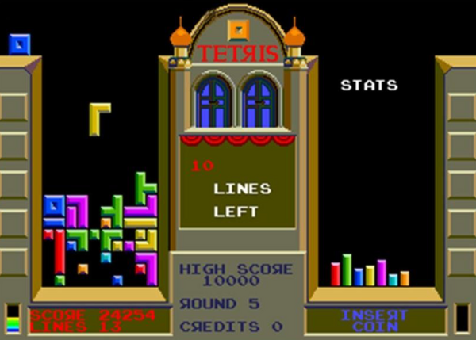
The space is also determined by the dimensions
The dimensions are not only aesthetics, they are also a design tool
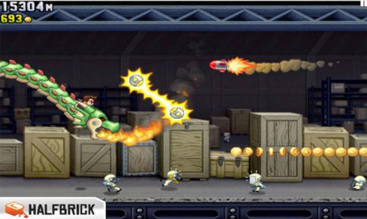
Figura 1: 2D
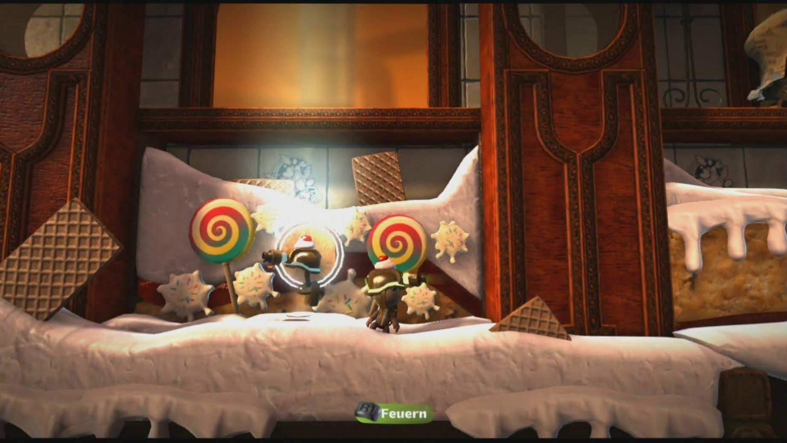
Figura 2: 3D
Resources
Game mechanics include the resources (and their logic):
- Platforms
- Coins
- Enemies
- Life
- …
Resources can be shown to the user
However, in game mechanics, not all resources will be visible:
- Speed
- Damage
- Random number thresholds
- …
Classic game design also divides resources into:
- consumable
- non-consumable
Resources also have attributes and state:
positionlifeammo...
Through display, sound and interface, we transmit resource information
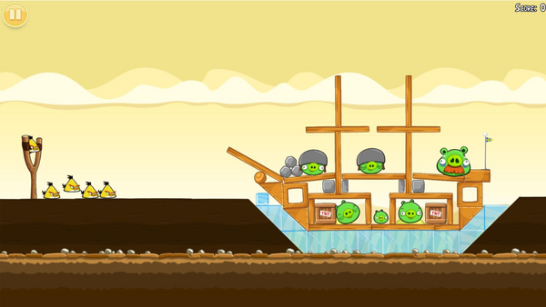
Figura 3: Differentiation between player and enemy
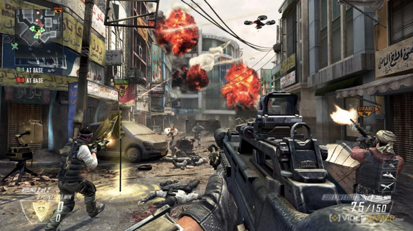
Figura 4: A more complicated scenario for resource information. But still, we can identify resources
Again, it is important to remember that the player does not have to have all the information
Do we need to know the exact speed of a football in a match?
Actions
There are two kinds of actions in a game:
- Operative actions
- Resulting actions
Operative actions are those carried out by the player
In Super Mario Bros: jump, run, chrouch
The less, the better
Resulting actions are consequences of the application of operative actions
In Super Mario Bros: kill enemy, break block, use turtle shell
The more, the merrier
One of the most common and useful ideas is that by reducing the amount of operative actions and increasing the amount of resulting actions, a game can become "easy to play, difficult to master"
Now, for a couple genre examples…
Beat'em up
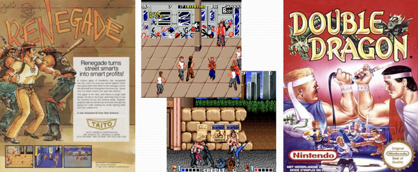
Figura 5: Brawler games
- 4-way movement
- Punch-kick-jump
- Co-operative game
- Steal weapons
- Power Ups (Health)
- Choose protagonist
- Special attacks
- Final bosses
Hack'n'slash

- Third-person camera
- Weak-strong attack
- Combos
- Counter-attack
- Ranged attack
- Block
- Dodge
- Finishers
Game dynamics
The run-time behavior of the mechanics acting on player inputs and each other' outputs over time
The game dynamics are the high level phenomenon that, built on the mechanics, creates the "gaming story"
For instance, constructing a basic city in Age of Empires 2:
Game aesthetics
The desirable emotional responses evoked in the player, when interacting with the game system
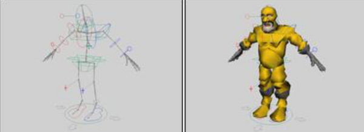
Canonically, aesthetics include graphics and sound
However, many other aspects of a videogame can be considered part of the aesthetics
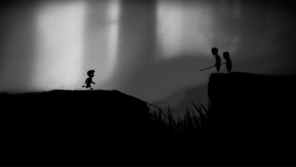
Figura 6: Limbo's aesthetics
Music is also fundamental in a game
Puzzles
Puzzles have a problem: once they are solved, the dynamics vanish
Puzzles are heavily present in videogames
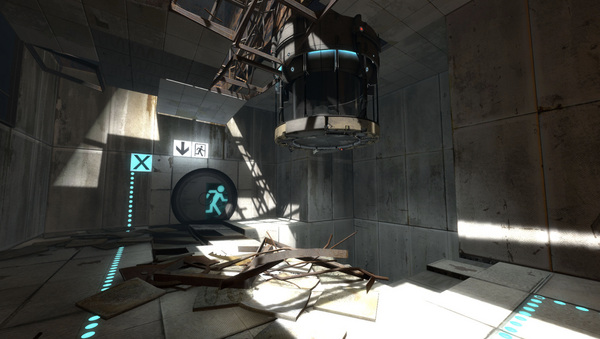
Figura 7: Puzzles are fundamental in Portal 2
Videogame puzzles maximize user immersion when the objective and the puzzle-solving mechanics are well integrated with the gameplay
Feedback is fundamental in puzzles
One of the most typical sources of frustration in players is not finding out whether they are doing the right thing or not
Good puzzles inform the user about the objective (what is to be solved) and the player's progress
Puzzles are a dangerous piece of game desing
Puzzles that block players can expel users
There are many ways to avoid this:
- Give the solution (at a price, of after several tries)
- Hinting
- Alternative paths
Story and narrative
One of the most effective tools for engaging in a video game is a good narrative
Narratives are ubiquitous
We, humans, love narratives. We tell and hear narratives every day
Conveying content through narratives is both effective and pleasant for the player
Characters
Narratives tell human lives
Therefore, characters are the main vehicle for narratives in game design
Games already have characters!
Additionally, we are already using virtual characters
Emotions
As players, we connect with the virtual characters
We understand and feel emotions, and this can leverage the perception of the game
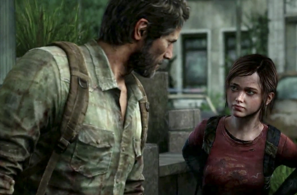
Figura 8: Last of us
Plot
The narrative plot is one of the main constituents of a story
Classic plots work well in videogames, and do not distract players from the gameplay
Different plots and endings
In a videogame, we can let the player experience different plots, according the player's decisions
Actually, multiple plot exploration exists in "choose your your adventure"-like narratives
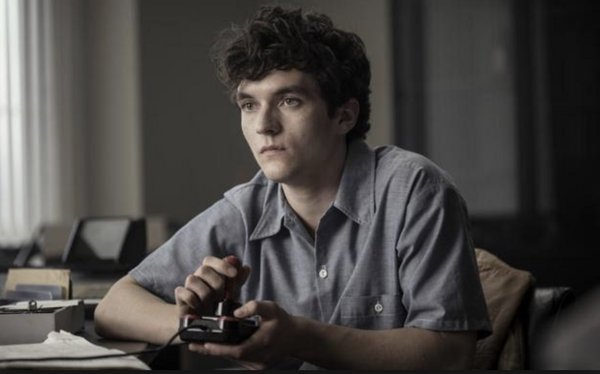
Figura 9: Black Mirror: Bandersnatch
Narrative vs. open world
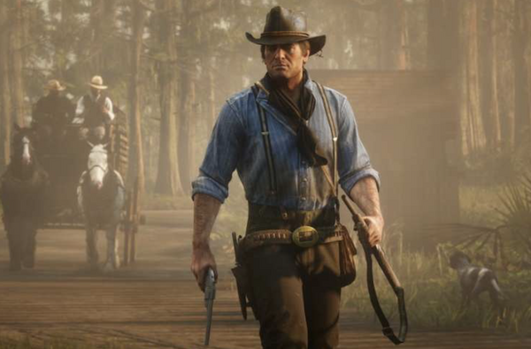
Figura 10: Red Dead Redemption 2
One of the longest standing objectives is to provide an open game in which great narratives occur, no matter the player's choices
Technically (both from the writers and the programmers), this is unachieved and challenging
It is hard to combine the possibilities of open worlds with the richness of good narratives, but there are ways to "provide" both
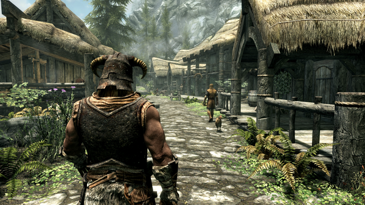
Figura 11: In Elder Scrolls V: Skyrim, the player can wander around the world, or interact at specific places for a good narrative
Level ambience also tells a story
The aesthetics, the ambience and the decoration contribute to conveying a narrative

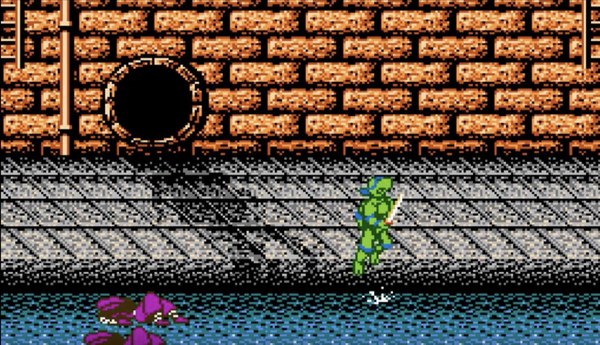
Player cognition
Videogames happen in the mind of the player
Understanding player cognition is an invaluable tool for good game design
Motivation and gameplay
Player's behavior is affected by motivation
Intrinsic motivation
Intrinsic motivation happens when the reward is internal
For instance, being the first player in the classification to show off
Extrinsic motivation
Extrinsic motivation happens when the activity to be carried out is not an objective, but leads to another motivation
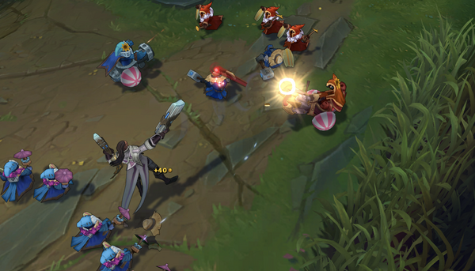
Figura 12: Gold farming in League of Legends leads to better objects
Reinforcement
Reinforcement is a classic way of controlling behaviour
Rewarding the player
- Consumable prizes (coins)
- Level prizes (leveling up)
- Game mechanic prizes (improving/easening mechanics)
- Narrative prizes (more story)
- Emotional prizes (characters and their relationships)
- Places (unlocking new places)
- Achievement (winning 100% of the game)
Figura 13: Super Mario Bros mushrooms are a classic prize
Reward frequency
The reward frequency can vary:
- fixed rate
- variable rate
- activity rate (the more you do, the more you win)

Figura 14: Clash of clans has a very addictive (and effective) rewarding system
Punishment
Punishment is, along with reinforcement, a very effective way of controlling player behaviour
Balance
The "perfect" game design achieves a good balance between reward and punishment
Learning curve and difficulty
Players (humans) have a limited memory span
Memory is limited in terms of amount of elements to be learnt, and the amount of time the learning perdures
Teach one mechanic at a time
Focusing on one single thing eases learing
If only one mechanic at a time in taught, the player will have less difficulties
Let the player practice
One a mechanic is "described", it is important to let the player practice in order to fixate the behavior
Repetition
Repeating behavior fixates memories
However, repetition needs to be spaced to be effective
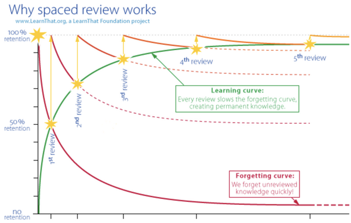
Figura 15: Spaced repetition
This means that mechanics have to be refreshed, especially at the beginning of the game
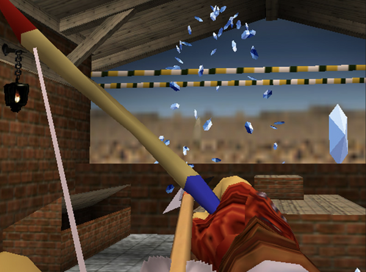
Figura 16: Shooting gallery in Zelda Ocarina of time
Interface and HUD
The game interface connects the player with the game world
The interface defines the input/output protocol
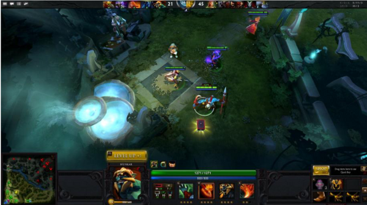
The interface is not only what is displayed on the screen
Every aspect of the communication between the system and the player is part of the interface
Designing a videogame for computer and for console is challenging because the players can have very different controllers
- Keyboard
- Mouse
- Touchscreen
- Gamepad
- VR headset
Not every gameplay con be played fully satisfactory with every input
Level Design
Conceptualization
Conceptualizing a level requires answering (among others) these questions:
- Why does the player need the level?
- Why does the game need the level?
How to come up with a level
- Mental ideation
- Pen and paper draft
- Draft in level editor
If the level seems long and boring, then it is long and boring
Worlds
Game mechanics must be put to action when playing a level (that is why we have them!)
But, in general, remember that walking is not a mechanic, it is just the way to go from one point to another
Characters
Levels contain other characters, and these characters also play a role in a level
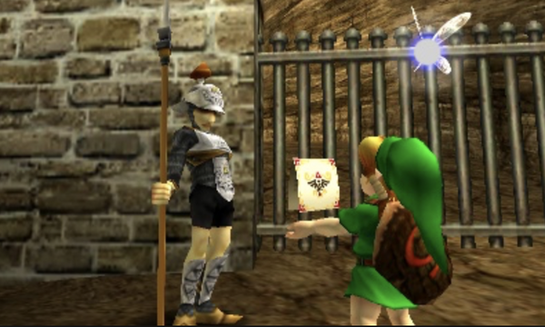
Interest and anticipation
provide a good ambience 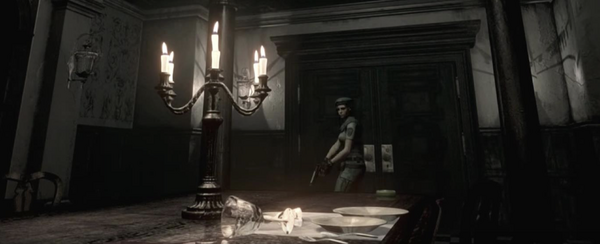
Design, graphics and sound
The designer, generally, is not directly involved in the creation of artistic assets for the levels
However, there must be a dialogue between designers and artists for the assets to make sense inside the level
Design coherence
Overall, the level must be coherent
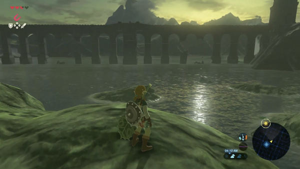
Figura 17: Lake Hylia in the Zelda series
It does not make sense to have stimpacks in ancient ruins!
Writing levels
Level objectives
A level presents, at least, one objective
(Ideally, only one. But this obviously depends)
It must be created as a unit
More elements and complexity does not mean more fun
Levels should not have too many objetives, because of learning principles
Levels should be playable in one single game session (i.e. should not be too long)
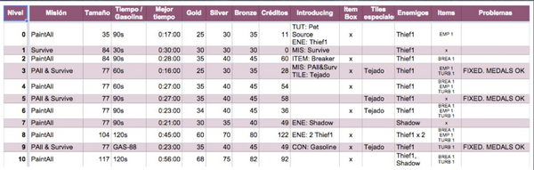
Figura 18: It is very useful to organize and structure the progression of game levels
Challenging player skills
Levels must challenge player skills in order to be interesting
Rhythm and tension
Demanding areas (many enemies, for instance) require energy from the player
Balancing effort and relax is necessary for the player to keep on at the appropriate pace
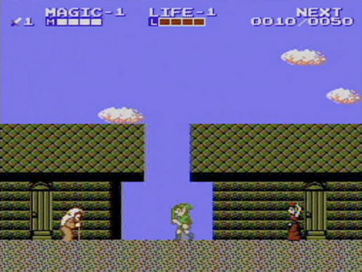
Figura 19: Towns are a classic resource for implementing a relaxing safe zone
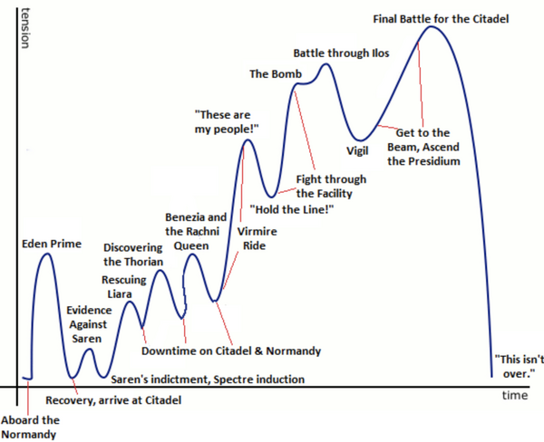
Figura 20: Tension arc in Mass Effect 3
Use what the player knows
In order to have the player advance, use previous knowledge (mechanics and dynamics) along the level
Additionally, is is crucial to design the game so that, at every spot in a level, all the required mechanics have been taught and checked (i.e. the game "knows" that the player knows the mechanic)
Avoid repetition
Repeating the same mechanic over and over, once the player has mastered it, is boring
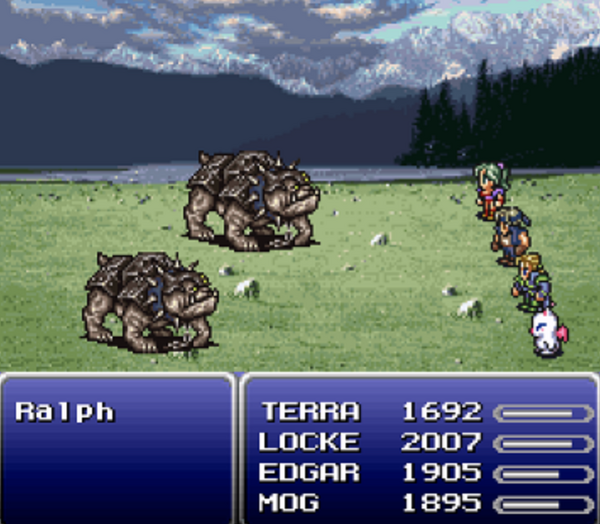
Figura 21: In Final Fantasy VI, many similar combats take place
Technology and level design
Prototyping
Before building the level, a few questions must be answered:
- Environment type
- Time of day
- Size
- Expected time of gameplay
- Enemies
- Abilities required
- Overall objective in game
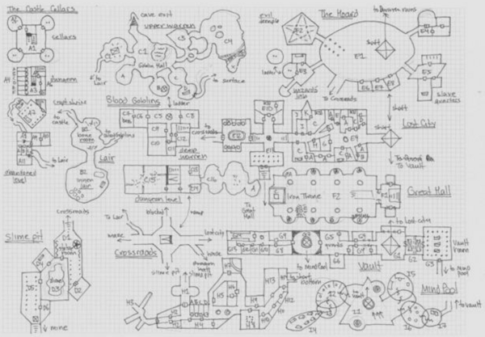
Figura 22: Map conceputalization
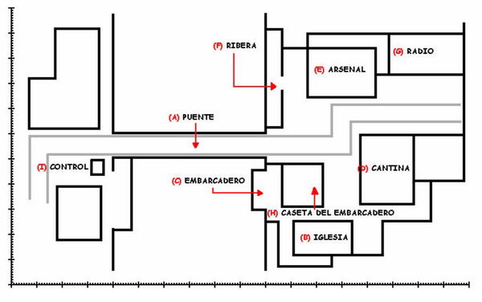
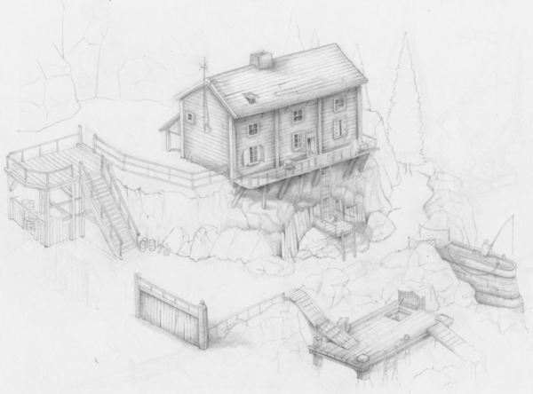
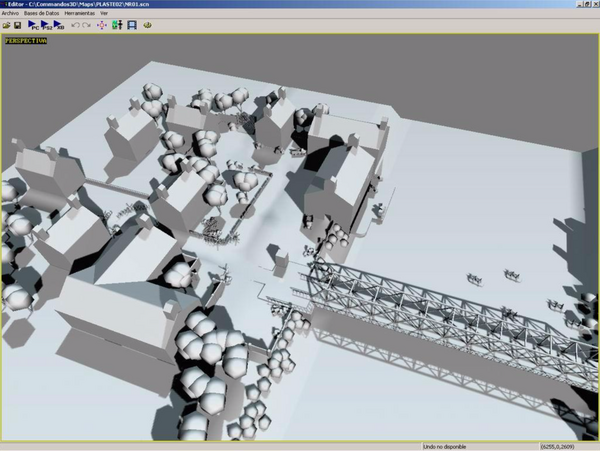
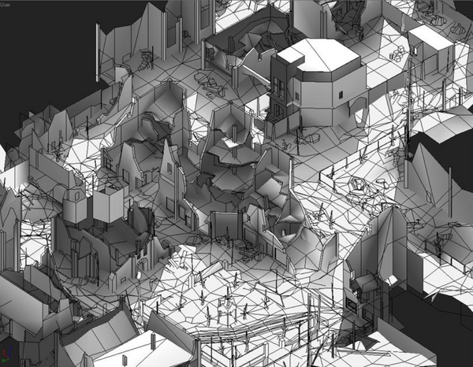
Building simple prototypes
Levels with name are easy to remember!
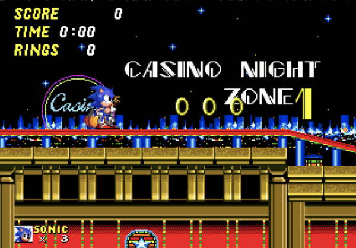
Figura 23: Levels can be named
Linear levels con provide extra paths with rewards for the players that spend time on them
Constructing levels with tools
Level elements
Geometry
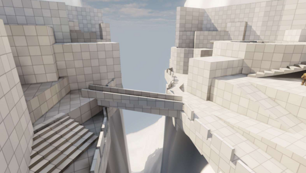
The first version of a level is built with blocks
Designers can do this without the help of artists (fast!)
It is a great technique to test the level
Final geometry should have the same bounding boxes
Objects and items
Level objects can be part of the level, by guiding and rewarding the player
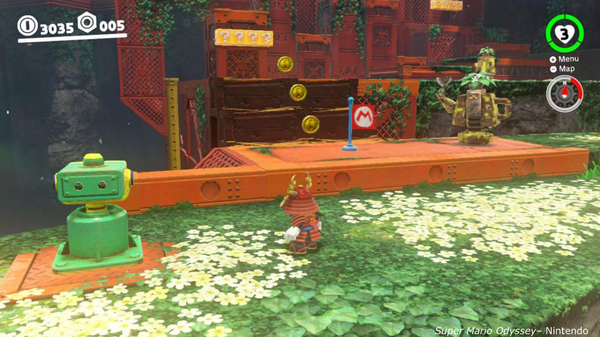
Needed objects must be placed in parts of the level that can be reached, and inform the user appropriately
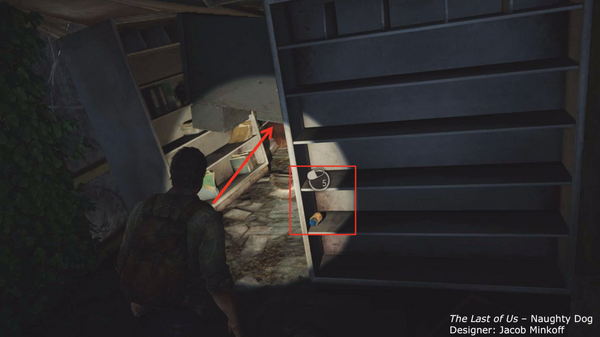
Rooms, spaces and scenes
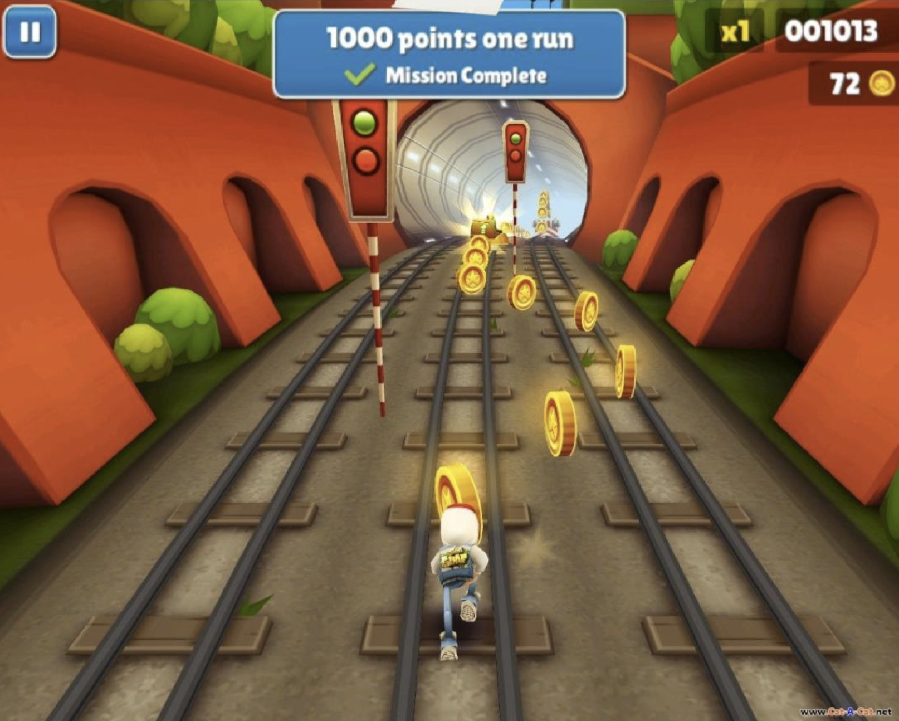
Figura 24: The shape of the level indicates where to go
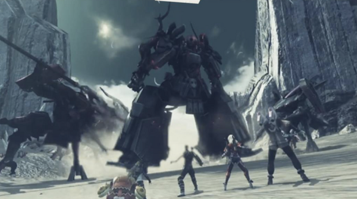
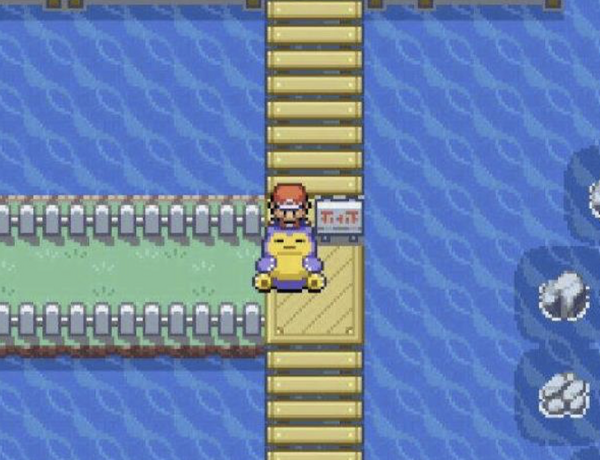
Figura 25: …or where not to go yet!
Colors, shapes, information
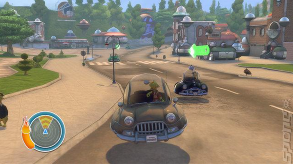
Reusing stereotypes helps!
- Green: go
- Red: don't go
Affordances
If it looks like I can go there, the player should be able to go there (and vice-versa!)
Affordances direct and help the player
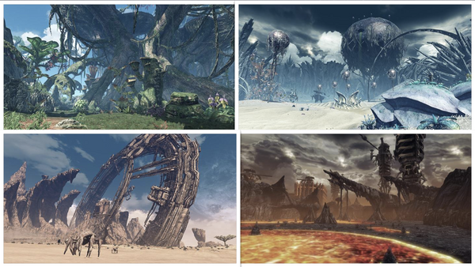
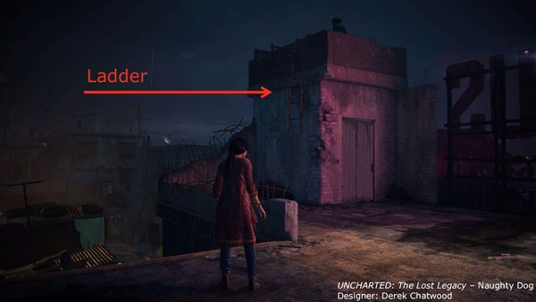
Showing the non-directly achievable solution for the current problem informs the user
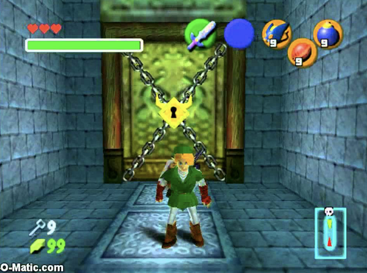
Perspective and game types
Perspective does not only change aesthetics, it also changes gameplay
It is important not to confuse 3D aesthetics with 3D gameplay
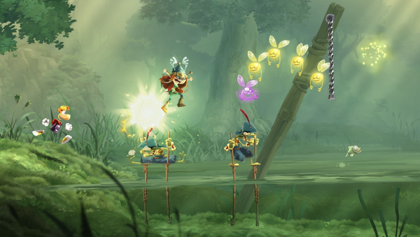
Figura 26: 2D gameplay can happen in 3D
Even 2D technology can support 3D!
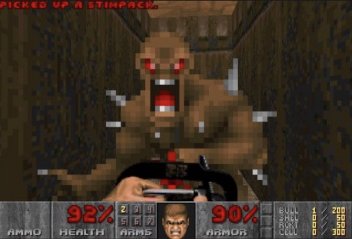
Top down 2D
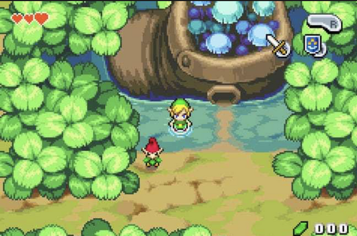
- The player sees the surroundings
- Jumping is (sometimes) tricky
- Mastering character movements can be part of the fun
- Although we live in a 3D world, many human tasks actually happen in 2D
Level layout is like mapping
Accessing parts is based on puzzles, not gamepad mastery
2D sidescroller
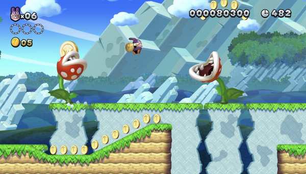
- Very focused, usually, on arcade mechanics
- Low level movement is the core of the gameplay
- Not well suited for labyrinths and puzzles (we have one less dimension)
Linear level layouts
Up and down requires managing gravity
Getting to different parts of the level needs mastering the controls
3D FPS
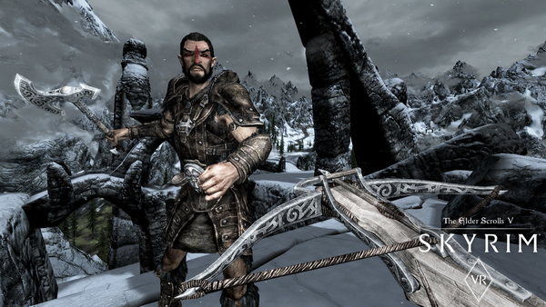
"Realistic" levels
Player perspective is very limited, so information must be very salient
No information about the exact position of the players body, pixel perfect manoeuvering is not a good idea
3D third person
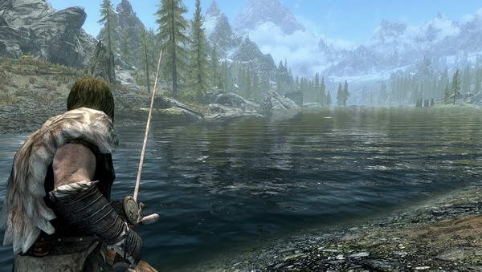
Similar to 3D FPS
Wider range
If the camera is close to the player, levels have the same requirements as FPS
However, some times 3D third person resembles 2D perspective (and thus, 2D levels)
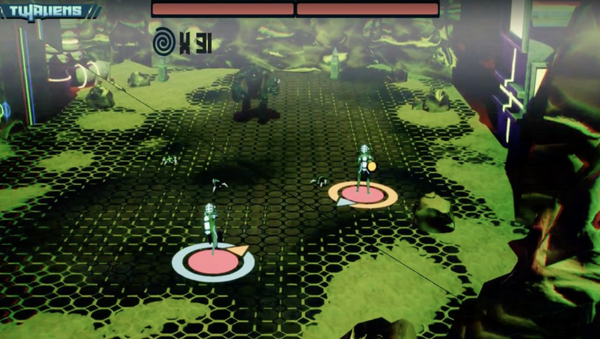
Playtesting
Level performance
Some times the level is playable, but it does not have the desired effect
Or, some times, the players do not perform the way the think they should
It is important to test that the level works according to the designed objective
Level design bugs
The implementation of a game mechanic can have a bug (programming team), but the level implementation (the construction) can have problems too
External testers
The designer's performance when testing a videogame is typically much better than the average player's
It is fundamental to test the game with external players
These players should represent our target (i.e. not only friends!)
Testing the game design and the levels is fundamental
Think \(\rightarrow\) Run \(\rightarrow\) Test